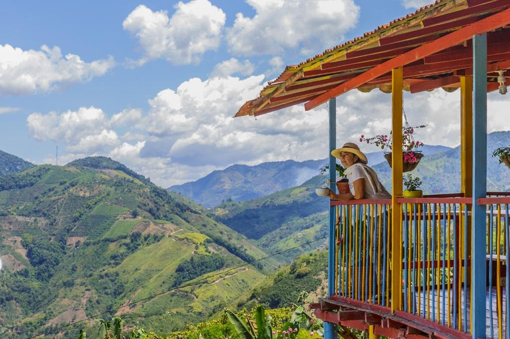
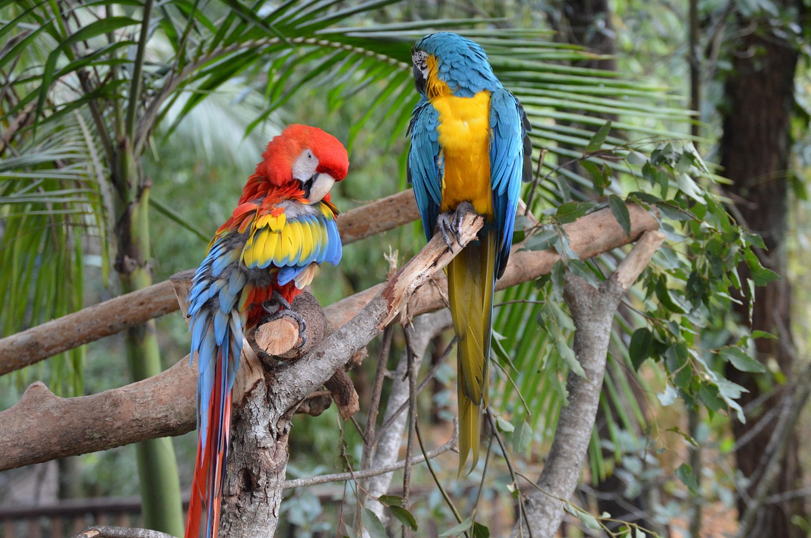

Hospedajes con Alma en Pereira


Pereira, corazón del Eje Cafetero, te espera con paisajes de montañas verdes, cafetales infinitos y una biodiversidad única. Vive experiencias ecoturísticas inolvidables: desde caminatas por el Parque Nacional Natural Los Nevados hasta baños en aguas termales, avistamiento de aves y recorridos por fincas cafeteras sostenibles. Descubre una ciudad que combina aventura, cultura cafetera y compromiso con el medio ambiente. ¡Tu viaje verde comienza aquí!

Pereira impulsa una economía sostenible basada en café de especialidad, agroturismo regenerativo y manufactura ecológica. Sus fincas cafetaleras con certificación Rainforest Alliance y emprendimientos de biocomercio son modelo nacional."
con mayor presencia del paisaje en los municipios de Apía, Belén de Umbría, Marsella, Santuario y Santa Rosa de Cabal. La zona de amortiguamiento incluye dos municipios

Pereira alberga el 7% de las aves de Colombia, con 600 especies registradas en corredores como la Reserva Río Blanco. Sus termales naturales (como Santa Rosa de Cabal) combinan aguas volcánicas con bosques de niebla, ideales para turismo de bienestar.
Ecosistemas únicos bosques de niebla que abrazan termales milenarios y páramos llenos de vida. La Reserva Río Blanco, santuario de aves, y Ukumarí, con sus historias de rescate animal, ofrecen una conexión profunda con la naturaleza.

Pereira sorprende con una gastronomía que honra su herencia cafetera: desde la bandeja montañera —cargada de fríjoles aromáticos y chicharrón crujiente—
hasta arepas de maíz amarillo molido en piedra. Cada plato cuenta la historia de campesinos e indígenas que cultivan ingredientes con técnicas ancestrales.